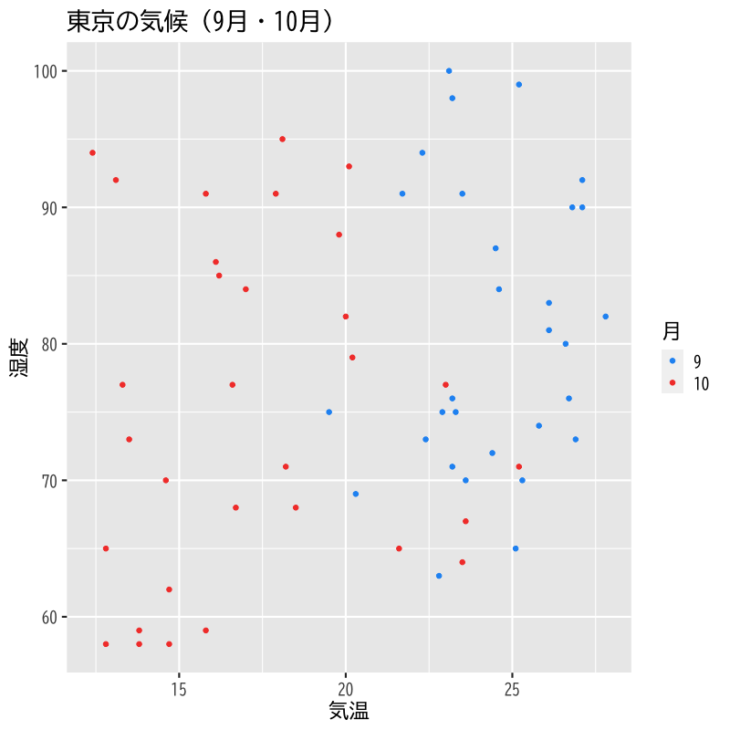
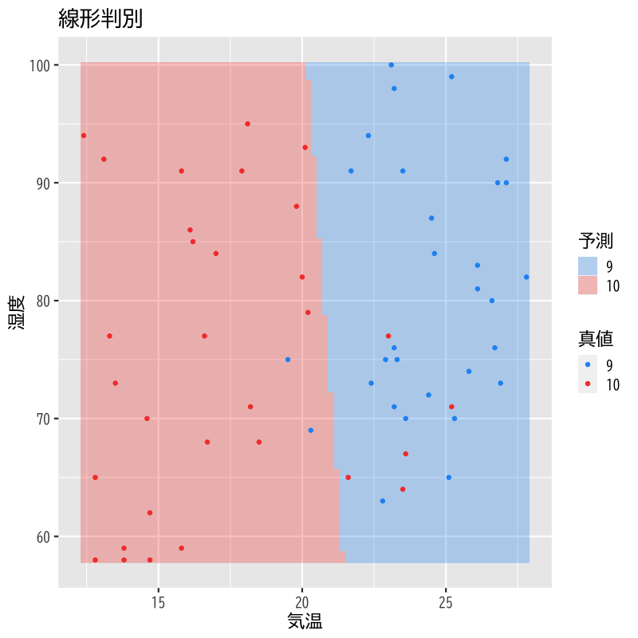
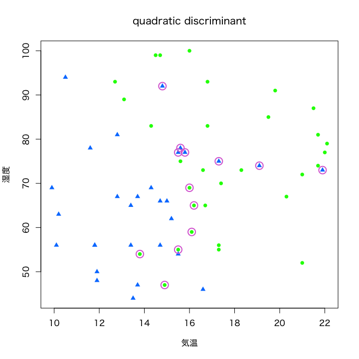
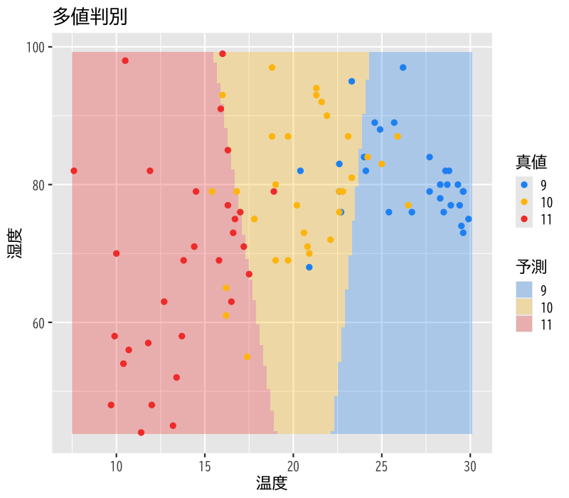

基本的な考え方
(Press ? for help, n and p for next and previous slide)
村田 昇
discriminant analysis
個体の特徴量からその個体の属する クラス を予測する関係式を構成する方法
\(X=\boldsymbol{x}\) の下で \(Y=k\) となる 条件付確率 を計算
\begin{equation} p_k(\boldsymbol{x})=P(Y=k|X=\boldsymbol{x}) \end{equation}
観測データ: \(n\) 個の \((Y,X_{1},\dots,X_{q})\) の組
\begin{equation} \{(y_{i},x_{i1},\dots,x_{iq})\}_{i=1}^n \end{equation}
事象 \(X=\boldsymbol{x}\) が起きたという条件の下で 事象 \(Y=k\) が起きる条件付確率
\begin{equation} p_k(\boldsymbol{x}) = P(Y=k|X=\boldsymbol{x}) = \frac{P(Y=k,X=\boldsymbol{x})}{P(X=\boldsymbol{x})} \end{equation}
\(Y=k\) の下での \(X\) の条件付き確率質量関数
\begin{equation} f_k(\boldsymbol{x}) = P(X=\boldsymbol{x}|Y=k)=\frac{P(X=\boldsymbol{x},Y=k)}{P(Y=k)} \end{equation}
のモデル化を通じて \(p_k(\boldsymbol{x})\) をモデル化する
Bayesの定理を用いればよい
事象で書くと以下のようになる
\begin{equation} P(A|B) =\frac{P(A)P(B|A)}{P(B)}. \end{equation}離散変数の場合は
\begin{equation} P(Y=k|X=x) =\frac{P(Y=k)P(X=x|Y=k)}{P(X=x)} \end{equation}と書くことができる
\(f_k(\boldsymbol{x})\) から \(p_k(\boldsymbol{x})\) を得る数学的原理
原因 \(X=\boldsymbol{x}\) から結果 \(Y=k\) が生じる確率 を 結果 \(Y=k\) が生じたときの原因が \(X=\boldsymbol{x}\) である確率 から計算する方法
Bayes の公式 (Bayes’ formula)
\begin{equation} p_k(\boldsymbol{x}) = P(Y=k|X=\boldsymbol{x}) = \frac{f_k(\boldsymbol{x})P(Y=k)}{\sum_{l=1}^{k}f_l(\boldsymbol{x})P(Y=l)} \end{equation}
定義より
\begin{equation} f_k(\boldsymbol{x}) = P(X=\boldsymbol{x}|Y=k) = \frac{P(X=\boldsymbol{x},Y=k)}{P(Y=k)} \end{equation}
求める条件付確率:
\begin{equation} p_k(\boldsymbol{x}) = P(Y=k|X=\boldsymbol{x}) = \frac{f_k(\boldsymbol{x})P(Y=k)}{P(X=\boldsymbol{x})} \end{equation}
分母の展開:
\begin{align} P(X=\boldsymbol{x}) &= \sum_{l=1}^{k}P(X=\boldsymbol{x},Y=l)\\ &= \sum_{l=1}^{k}f_l(\boldsymbol{x})P(Y=l) \end{align}
Bayes の公式による書き換え:
\begin{equation} p_k(\boldsymbol{x}) = \frac{f_k(\boldsymbol{x})\pi_k}{\sum_{l=1}^{k}f_l(\boldsymbol{x})\pi_l} = \frac{f_k(\boldsymbol{x})}{\sum_{l=1}^{k}f_l(\boldsymbol{x})\pi_l} \cdot\pi_k \end{equation}事前確率が説明変数の条件付確率の重みで変更される
事前に特別な情報がない場合:
データから自然に決まる確率
\begin{equation} \pi_k = \frac{\text{\(Y=k\)のサンプル数}}{\text{全サンプル数}} \end{equation}
事前に情報がある場合:
例: 食事・運動・飲酒・ストレスなどの生活の特徴から生活習慣病か否かを判別
- 健常者の食事・運動・飲酒・ストレスなどの特徴量を収集
- 罹患者の食事・運動・飲酒・ストレスなどの特徴量を収集
- 事前確率は 別の調査の日本人の罹患率 を利用
判別関数: \(\delta_k(\boldsymbol{x})\) (\(k=1,\dots,K\))
\begin{equation} p_k(\boldsymbol{x}) < p_l(\boldsymbol{x}) \Leftrightarrow \delta_k(\boldsymbol{x}) < \delta_l(\boldsymbol{x}) \end{equation}事後確率の順序を保存する計算しやすい関数
共分散行列 \(\Sigma\): すべてのクラスで共通
\begin{equation} f_k(\boldsymbol{x}) = \frac{1}{(2\pi)^{q/2}\sqrt{\det\Sigma}} \exp\left(-\frac{1}{2}(\boldsymbol{x}-\boldsymbol{\mu}_k)^{\mathsf{T}} \Sigma^{-1}(\boldsymbol{x}-\boldsymbol{\mu}_k)\right) \end{equation}
線形判別関数: \(\boldsymbol{x}\) の1次式
\begin{equation} \delta_k(\boldsymbol{x}) = \boldsymbol{x}^{\mathsf{T}}\Sigma^{-1}\boldsymbol{\mu}_k -\frac{1}{2}\boldsymbol{\mu}_k^{\mathsf{T}}\Sigma^{-1}\boldsymbol{\mu}_k +\log\pi_k \end{equation}
平均の推定 (クラスごとに行う)
\begin{equation} \hat{\boldsymbol{\mu}}_k = \frac{1}{n_k}\sum_{i:y_{i}=k}\boldsymbol{x}_{i} \end{equation}ただし \(n_k\) は \(y_{i}=k\) であるようなデータの総数
分散の推定 (まとめて行う)
\begin{equation} \hat{\Sigma} = \frac{1}{n-K}\sum_{k=1}^{k}\sum_{i:y_{i}=k} (\boldsymbol{x}_{i}-\hat{\boldsymbol{\mu}}_k) (\boldsymbol{x}_{i}-\hat{\boldsymbol{\mu}}_k)^{\mathsf{T}} \end{equation}
\(X\)の条件付確率 \(f_k(\boldsymbol{x})\) に関する仮定:
のもとで 事後確率と線形判別関数の同値性
\begin{equation} p_k(\boldsymbol{x}) < p_l(\boldsymbol{x}) \Leftrightarrow \delta_k(\boldsymbol{x}) < \delta_l(\boldsymbol{x}) \end{equation}
を示しなさい．
同値関係を順に確認すればよい
\begin{align} &p_k(\boldsymbol{x}) < p_l(\boldsymbol{x})\\ &\Leftrightarrow f_k(\boldsymbol{x})\pi_k < f_l(\boldsymbol{x})\pi_l\\ &\Leftrightarrow \log f_k(\boldsymbol{x})+\log\pi_k < \log f_l(\boldsymbol{x})+\log\pi_l\\ &\Leftrightarrow -\frac{1}{2}(\boldsymbol{x}-\boldsymbol{\mu}_k)^{\mathsf{T}} \Sigma^{-1}(\boldsymbol{x}-\boldsymbol{\mu}_k)+\log\pi_k\\ &\phantom{\Leftrightarrow}\quad < -\frac{1}{2}(\boldsymbol{x}-\boldsymbol{\mu}_l)^{\mathsf{T}} \Sigma^{-1}(\boldsymbol{x}-\boldsymbol{\mu}_l)+\log\pi_l\\ &\Leftrightarrow \delta_k(\boldsymbol{x}) < \delta_l(\boldsymbol{x}) \end{align}
MASS::lda()データフレームに対する分析:
library(MASS) # または require(MASS)
lda(formula = yの変数名 ~ x1の変数名 + ... + xpの変数名,
data = データフレーム)
## formula: 目的変数名 ~ 説明変数名
## data: 目的変数，説明変数を含むデータフレーム
## 書式は lm() とほぼ同じ
判別関数値の図示:
est <- lda(formula = yの変数名 ~ x1の変数名 + ... + xpの変数名,
data = データフレーム)
plot(est)
10月と11月の気温と湿度のデータを抽出する
TW.data <- transform(read.csv("data/tokyo_weather_reg.csv"),
month=as.numeric(months(as.Date(date),
abbreviate=TRUE)))
TW.subset <- subset(TW.data,
subset= month %in% c(10,11),
select=c(temp,humid,month))
半分のデータを用いて線形判別関数を構成し，残りのデータを用いて判別を行う
library(MASS)
idx <- seq(2,60,by = 2)
TW.train <- TW.subset[ idx,] # 訓練データ
TW.test <- TW.subset[-idx,] # 試験データ
TW.lda <- lda(month ~ temp + humid, data=TW.train) # 線形判別関数の構成
TW.est <- predict(TW.lda) # 判別関数によるクラス分類結果の取得
TW.pred <- predict(TW.lda, newdata=TW.test) # 新しいデータの予測
共分散行列 \(\Sigma_k\): クラスごとに異なる
\begin{equation} f_k(\boldsymbol{x}) = \frac{1}{(2\pi)^{q/2}\sqrt{\det\Sigma_k}} \exp\left(-\frac{1}{2}(\boldsymbol{x}-\boldsymbol{\mu}_k)^{\mathsf{T}} \Sigma_k^{-1}(\boldsymbol{x}-\boldsymbol{\mu}_k)\right) \end{equation}
2次判別関数: \(\boldsymbol{x}\) の2次式
\begin{equation} \delta_k(\boldsymbol{x}) = -\frac{1}{2}\det\Sigma_k -\frac{1}{2}(\boldsymbol{x}-\boldsymbol{\mu}_k)^{\mathsf{T}} \Sigma_k^{-1}(\boldsymbol{x}-\boldsymbol{\mu}_k) +\log\pi_k \end{equation}
平均の推定 (クラスごとに行う)
\begin{equation} \hat{\boldsymbol{\mu}}_k = \frac{1}{n_k}\sum_{i:y_{i}=k}\boldsymbol{x}_{i} \end{equation}だたし \(n_k\) は \(y_{i}=k\) であるようなデータの総数
分散の推定 (クラスごとに行う)
\begin{equation} \hat{\Sigma}_k = \frac{1}{n_k-1}\sum_{i:y_{i}=k} (\boldsymbol{x}_{i}-\hat{\boldsymbol{\mu}}_k) (\boldsymbol{x}_{i}-\hat{\boldsymbol{\mu}}_k)^{\mathsf{T}} \end{equation}
\(X\)の条件付確率 \(f_k(\boldsymbol{x})\) に関する仮定:
のもとで 事後確率と2次判別関数の同値性
\begin{equation} p_k(\boldsymbol{x}) < p_l(\boldsymbol{x}) \Leftrightarrow \delta_k(\boldsymbol{x}) < \delta_l(\boldsymbol{x}) \end{equation}
を示しなさい．
同値関係を順に確認すればよい
\begin{align} &p_k(\boldsymbol{x}) < p_l(\boldsymbol{x})\\ &\Leftrightarrow f_k(\boldsymbol{x})\pi_k < f_l(\boldsymbol{x})\pi_l\\ &\qquad\text{(分母は共通)}\\ &\Leftrightarrow \log f_k(\boldsymbol{x})+\log\pi_k < \log f_l(\boldsymbol{x})+\log\pi_l\\ &\Leftrightarrow -\frac{1}{2}\det\Sigma_k -\frac{1}{2}(\boldsymbol{x}-\boldsymbol{\mu}_k)^{\mathsf{T}} \Sigma_k^{-1}(\boldsymbol{x}-\boldsymbol{\mu}_k) +\log\pi_k\\ &\phantom{\Leftrightarrow}\quad < -\frac{1}{2}\det\Sigma_l -\frac{1}{2}(\boldsymbol{x}-\boldsymbol{\mu}_l)^{\mathsf{T}} \Sigma_l^{-1}(\boldsymbol{x}-\boldsymbol{\mu}_l) +\log\pi_l\\ &\Leftrightarrow \delta_k(\boldsymbol{x}) < \delta_l(\boldsymbol{x}) &\qquad\text{(2次の項は右辺と左辺で共通)} \end{align}
MASS::qda()データフレームに対する分析:
library(MASS) # または require(MASS)
qda(formula = yの変数名 ~ x1の変数名 + ... + xpの変数名,
data = データフレーム)
## formula: 目的変数名 ~ 説明変数名
## data: 目的変数，説明変数を含むデータフレーム
前問と同様な設定で2次判別を行いなさい
TW.qda <- qda(month ~ temp + humid, data=TW.train) # 2次判別関数の構成
TW.est <- predict(TW.qda) # 判別関数によるクラス分類結果の取得
TW.pred <- predict(TW.qda, newdata=TW.test) # 新しいデータの予測
変動の関係
\begin{equation} \text{(全変動)} = \text{(群内変動)} + \text{(群間変動)} \end{equation}\begin{equation} A = W + B \end{equation}
説明変数の線形結合で新たな特徴量を構成する．
\begin{equation} Z=\boldsymbol{\alpha}^{\mathsf{T}} X \end{equation}
このとき\(Z\)の群内変動と群間変動を求めなさい．
定義どおりに計算する
\begin{align} A &=\sum_{i=1}^{n}(\boldsymbol{x}_{i}-\boldsymbol{\mu}) (\boldsymbol{x}_{i}-\boldsymbol{\mu})^{\mathsf{T}}\\ &= \sum_{i=1}^{n}(\boldsymbol{x}_{i}-\boldsymbol{\mu}_{y_{i}}+\boldsymbol{\mu}_{y_{i}}-\boldsymbol{\mu}) (\boldsymbol{x}_{i}-\boldsymbol{\mu}_{y_{i}}+\boldsymbol{\mu}_{y_{i}}-\boldsymbol{\mu})^{\mathsf{T}}\\ &= \sum_{i=1}^{n}(\boldsymbol{x}_{i}-\boldsymbol{\mu}_{y_{i}}) (\boldsymbol{x}_{i}-\boldsymbol{\mu}_{y_{i}})^{\mathsf{T}} + \sum_{i=1}^{n}(\boldsymbol{\mu}_{y_{i}}-\boldsymbol{\mu}) (\boldsymbol{\mu}_{y_{i}}-\boldsymbol{\mu})^{\mathsf{T}}\\ &\quad +\sum_{i=1}^{n}(\boldsymbol{x}_{i}-\boldsymbol{\mu}_{y_{i}}) (\boldsymbol{\mu}_{y_{i}}-\boldsymbol{\mu})^{\mathsf{T}} +\sum_{i=1}^{n}(\boldsymbol{\mu}_{y_{i}}-\boldsymbol{\mu}) (\boldsymbol{x}_{i}-\boldsymbol{\mu}_{y_{i}})^{\mathsf{T}} \end{align}
添字の扱いに注意する
\begin{align} &= \sum_{i=1}^{n}(\boldsymbol{x}_{i}-\boldsymbol{\mu}_{y_{i}}) (\boldsymbol{x}_{i}-\boldsymbol{\mu}_{y_{i}})^{\mathsf{T}} + \sum_{k=1}^{K}\sum_{i:y_{i}=k} (\boldsymbol{\mu}_{k}-\boldsymbol{\mu}) (\boldsymbol{\mu}_{k}-\boldsymbol{\mu})^{\mathsf{T}}\\ &\quad +\sum_{k=1}^{K}\sum_{i:y_{i}=k} (\boldsymbol{x}_{i}-\boldsymbol{\mu}_{k}) (\boldsymbol{\mu}_{k}-\boldsymbol{\mu})^{\mathsf{T}} +\sum_{k=1}^{K}\sum_{i:y_{i}=k} (\boldsymbol{\mu}_{k}-\boldsymbol{\mu}) (\boldsymbol{x}_{i}-\boldsymbol{\mu}_{k})^{\mathsf{T}}\\ &= \sum_{i=1}^{n}(\boldsymbol{x}_{i}-\boldsymbol{\mu}_{y_{i}}) (\boldsymbol{x}_{i}-\boldsymbol{\mu}_{y_{i}})^{\mathsf{T}} + \sum_{k=1}^{K}n_{k}(\boldsymbol{\mu}_{k}-\boldsymbol{\mu}) (\boldsymbol{\mu}_{k}-\boldsymbol{\mu})^{\mathsf{T}}\\ &= W+B \end{align}
定義どおりに計算する
\begin{align} \sum_{i=1}^{n} (z_{i}-\mu_{y_{i}})^{2} &= \sum_{i=1}^{n} (z_{i}-\mu_{y_{i}})(z_{i}-\mu_{y_{i}})\\ &= \sum_{i=1}^{n}(\boldsymbol{\alpha}^{\mathsf{T}}\boldsymbol{x}_{i} -\boldsymbol{\alpha}^{\mathsf{T}}\boldsymbol{\mu}_{y_{i}}) (\boldsymbol{\alpha}^{\mathsf{T}}\boldsymbol{x}_{i} -\boldsymbol{\alpha}^{\mathsf{T}}\boldsymbol{\mu}_{y_{i}})^{\mathsf{T}}\\ &= \boldsymbol{\alpha}^{\mathsf{T}} \sum_{i=1}^{n}(\boldsymbol{x}_{i}-\boldsymbol{\mu}_{y_{i}}) (\boldsymbol{x}_{i}-\boldsymbol{\mu}_{y_{i}})^{\mathsf{T}} \boldsymbol{\alpha} = \boldsymbol{\alpha}^{\mathsf{T}} W\boldsymbol{\alpha}\\ \sum_{k=1}^{K}n_{k}(\mu_{k}-\mu)^{2} &= \boldsymbol{\alpha}^{\mathsf{T}} B\boldsymbol{\alpha} \end{align}
Fisherの基準:
\begin{equation} \text{maximize}\quad \boldsymbol{\alpha}^{\mathsf{T}} B\boldsymbol{\alpha} \quad\text{s.t.}\quad \boldsymbol{\alpha}^{\mathsf{T}} W\boldsymbol{\alpha}=\text{const.} \end{equation}クラス内変動を一定にしてクラス間変動を最大化する
\(K=2\) の場合: 最大固有値を用いる (線形判別と一致)
\begin{equation} \boldsymbol{\alpha}\propto W^{-1}(\mu_{1}-\mu_2) \end{equation}
9月，10月，11月の気温と湿度のデータを用いて判別関数を作成しなさい．
TW.subset <- subset(TW.data,
subset= month %in% c(9,10,11),
select=c(temp,humid,month))
TW.lda <- lda(month ~ temp + humid, data=TW.subset)
別の月や変数を用いて判別分析を行いなさい
## 雨の有無を識別する例
TW.mydata <- transform(TW.data,
rain=factor(rain>0), # 雨の有無でラベル化する
month=factor(month)) # 月ごとの気候の違いの補正のため
TW.mylda <- lda(rain ~ temp + solar + wind + month,
data=TW.mydata)
10,11月のデータの散布図

Figure 1: 散布図
線形判別

Figure 2: 線形判別
2次判別

Figure 3: 2次判別
9,10,11月の多値判別

Figure 4: 多値判別